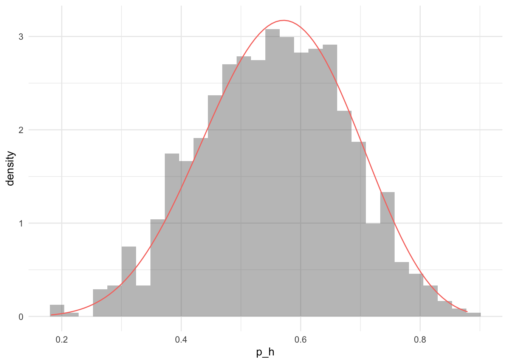

As an example, consider a (possibly biased) coin flip experiment. The parameter of interest is the probability of heads \(p_h\). A Beta distribution is chosen for the prior of \(p_h\), \(p(p_h) = \mathcal{B}(\alpha, \beta)\). The Beta distribution has support between 0 and 1, which is appropriate for a probability. The likelihood of a coin flip is Bernoulli, however the coin should be flipped several times in order to learn the parameter \(p_h\). The distribution for \(n\) independent Bernoulli trials is the Binomial distribution, hence the likelihood can be written as \(\textrm{Bin}(Y;n,p_h)\). The coin is flipped \(n = 10\) times and the results are displayed below:
Then \(Y = 6\), and it remains to determine the posterior distribution of the parameter \(p_h\) representing the probability of obtaining heads. Applying Bayes theorem:
The rejection sampler is an algorithm which produces exact samples from the target distribution. Consider a problem where it is straightforward to evaluate the posterior density \(p(\cdot)\) up to a constant. The rejection sampler algorithm proceeds as follows; start by sampling a value from a proposal distribution \(\psi^\star \sim q(\cdot)\), then accept the proposed value with probability \(p(\psi^\star)/Mq(\psi)\), where \(M\) is an upper bound on \(p/q\). The algorithm below shows a single step of the rejection sampler algorithm which returns a single sample from the target distribution \(p(\cdot)\).
Propose \(\psi^\star \sim q(\cdot)\)
Continuously sample \(u \sim U[0, 1]\) and check the condition in step 3.
If \(u < \frac{p(\psi^\star)}{Mq(\psi)}\), set \(\psi^\star\) as a sample from \(p\)
Repeat 1-3 until enough samples are attained
The figure below shows the empirical posterior distribution found for the coin flip experiment overlaid with the analytic posterior distribution. This algorithm performs well for low-dimensional problems, but finding the upper bound \(M\) can be challenging. The rejection algorithm does not work well in higher dimensions as many proposed moves are rejected. Adding extra dimensions to the problem results in the exponential increase in volume, this is known as the curse of dimensionality. More sophisticated algorithms are required for high dimensional target distributions.
# Perform one rejection steprejection_sample <-function(prop, propPdf, log_density) { u <-runif(1) y <-prop(1)if (log(u) <log_density(y) -propPdf(y)) { y } else {rejection_sample(prop, propPdf, log_density) }}log_density <-function(alpha, beta, Y, n) {function(theta) {dbeta(theta, alpha, beta, log = T) +dbinom(Y, n, theta, log = T) }}samples <-1000lden <-log_density(alpha, beta, Y, n)rejection_samples <-replicate(samples, rejection_sample(runif, function(x)dunif(x, log = T), lden))ggplot(tibble(rejection_samples)) +geom_histogram(aes(x = rejection_samples, y = ..density..), alpha =0.4) +stat_function(fun = posterior, aes(colour ="Analytic posterior")) +theme(legend.position ="none") +xlab("p_h")
`stat_bin()` using `bins = 30`. Pick better value with `binwidth`.

Empirical Posterior distribution for the coin flip problem using 1,000 samples from the rejection sampler with a Uniform(0, 1) proposal distribution and M = 1. The analytic posterior distribution is plotted as a solid red line.
Citation
BibTeX citation:
@online{law2019,
author = {Jonny Law and Jonny Law},
title = {Bayesian {Inference} Using Rejection Sampling},
date = {2019-02-25},
langid = {en}
}
For attribution, please cite this work as:
Jonny Law, and Jonny Law. 2019. “Bayesian Inference Using
Rejection Sampling.” February 25, 2019.